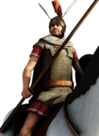
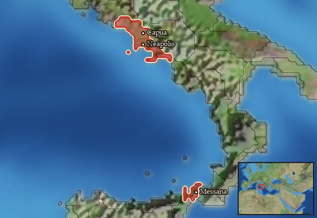

Campanian Heavy Cavalry


Class: heavy · Category: cavalry · Men per unit: 30
Description
The most distinguished nobles of Campania have taken up their arms and ride together for glory and riches. Like true heroes of old, they are the ones expected to turn a losing battle into a glorious tale of victory. Years of service alongside Rome as allies heavily influenced the aristocracy of wealthy cities such as Capua, Nola, and Cumae, prompting them to adopt heavier military equipment, especially following the wars with the Celts. These heavy cavalrymen enter battle armoured in iron mail shirts, bronze muscle cuirasses, or triple-disc breastplates, along with crested Montefortino or Attic bronze helmets. For defence, they carry round cavalry shields featuring central bosses, painted with lion and sunburst designs. Thanks to their armour and shields, these men are able to survive an extended melee. They are armed with lances as well as swords for close combat. Second to none, their charge is the most feared across Italy, and for a good reason! Few foes can remain standing under the fury of their warhorses and the sharpened points of their spears.
Historical background
Campania, centred around the fertile plain of Capua and bordered by the Tyrrhenian Sea and the Apennine mountains, was already praised for its agricultural and commercial wealth in antiquity. As Polybius records: “The plain around Capua is the most celebrated in all Italy, both for its fertility and beauty, and because it is served by those sea-ports at which voyagers to Italy from nearly all parts of the world land. It also contains the most celebrated and finest cities in Italy” (Polyb. 3.91). Originally inhabited by Oscan-speaking populations, Campania was colonised by the Etruscans, who founded Capua around 600 BC. The region was subsequently conquered by the Samnites in the late 5th century BC, who seized Capua in 424 BC and Cumae in 420 BC, while entering into a shared Greco-Oscan ruling arrangement at Neapolis (Liv. 4.37.1–2, 4.44.12; Burns, The Cultural and Military Significance (2005), pp. 18–20; Fronda, Between Rome and Carthage (2010), pp. 121, 139). By the 4th century BC, Livy described Capua as the largest and richest city in Italy (‘urbs maxima opulentissimaque Italiae’: Liv. 7.31.1), which dominated satellite towns such as Atella, Calatia, and Casilinum (Fronda (2010), pp. 1215–1222).
The wealth of its rich countryside, with a fertile volcanic soil, mild climate, and flat pastures, created ideal conditions for horse-breeding. The Campanians put this to good use by raising strong, agile horses, which earned them a reputation as formidable horsemen across the Mediterranean (Tan, 'The dilectus-tributum system’, in: Armstrong and Fronda (eds.), Romans at War (2020), p. 69; Burns, ‘Visible Proofs of Valour’, in: Papers from the Institute of Archaeology 14 (2003), pp. 50–51). Campanian mercenaries, whether or not from Capua itself, were held in the highest regard by the Sicilians (Diod. Sic. 13.80). It is nonetheless clear that the tradition associated Capua’s military capacity with its cavalry rather than its infantry (Tan (2020), p. 69). In 411 BC, Carthage hired 800 Campanian horsemen originally recruited for the Athenian expedition to Syracuse (Diod. Sic. 13.44), re-hiring additional contingents in 406 BC specifically to prevent them from aiding the Sicilian Greeks (Diod. Sic. 13.80.4; Burns (2003), p. 50). Shortly thereafter, 1,200 Campanian cavalrymen rode to Syracuse to rescue the tyrant Dionysios I (Diod. Sic. 14.9.2).
Following Rome's intervention in Campania in 343 BC and the Latin Settlement of 338 BC, Capua, Cumae, and Suessula were incorporated with civitas sine suffragio (citizenship without the vote). However, the Campanian aristocracy had remained loyal to Rome during the Latin revolt, and 1,600 Campanian equites were rewarded with full Roman citizenship (civitas optimo iure), an honour commemorated by a bronze tablet affixed to the Temple of Castor in Rome (Liv. 7.31, 8.11.16, 8.14.10–11; Tan (2020), pp. 68–69). Rome also mandated that the people of Campania had to pay an annual local tax (vectigal) of 450 denarii to each horseman to subsidize their mounts and equipment, ensuring that Rome would benefit from the best allied heavy cavalry without burdening its own treasury (Liv. 8.11.16; Plin. HN 33.29; Tan (2020), p. 69). Thereafter, Campanian horsemen became an indispensable part of Roman field armies. In 225 BC, when Roman officials compiled their military census to face an impending Gallic invasion, they tallied Roman and Campanian manpower together at 250,000 infantry and 23,000 cavalry (Polyb. 2.24.14; Tan (2020), p. 62). Whereas Polybius lists separate manpower figures for Rome's other Italian allies, his combined number for the Romans and Campanians reflects how their civic status had integrated them directly into Rome's census rolls and how important Campanian cavalry had become to the Roman military. At the outbreak of the Second Punic War, Rome deployed 300 noble horsemen from Capua's leading families to garrison Sicily (Liv. 23.4.7–8; Armstrong, 'Organized chaos’, in: Armstrong and Fronda (eds.), Romans at War (2020), p. 93).
Campanian cavalry repeatedly proved decisive on the battlefield. At the Battle of Sentinum in 295 BC, a flanking charge by 500 Campanian horsemen broke the Gallic and Samnite lines and secured a Roman victory (Liv. 10.29.12; Burns (2003), p. 50). The Campanian nobility also continued the proud tradition of single combat (monomachy). This was exemplified by Cerrinus Vibellius Taurea during the Second Punic War. Livy described him as “by far the finest soldier in the Campanian horse”, who rode before the Roman lines to challenge Claudius Asellus to single combat on horseback (Liv. 23.46.12–14; Burns (2003), pp. 51–52). Although Livy's duel narratives always end in a Roman victory, the fact that he singles out Campanian horsemen as champion duellists with whom the Romans must contend to prove their valour and skill in combat shows not only their own affinity for single combat and the pursuit of spoils as visible proofs of military prowess, but also the immense prestige that the Romans attached to defeating such formidable foes (Burns (2003), p. 52).
Over the course of the 3rd century BC, Campanian and Roman cavalry underwent a major equipment transformation, adopting heavier Hellenistic and Celtic-derived arms (Polyb. 6.25.6–11). Heavy iron ring-mail shirts (lorica hamata) were adopted from the Celts (Varro, Ling. 5.116; Helm, 'Poor man's war – rich man's fight', in: Armstrong and Fronda (eds.), Romans at War (2020), p. 105 n. 29), increasingly replacing the older bronze muscle cuirasses. In the same period, round-spined cavalry shields replaced lighter archaic shields across Campania and Apulia (Burns (2005), pp. 165–172).
Following Rome's catastrophic defeat at Cannae in August 216 BC, Capua, influenced by pro-Carthaginian nobles such as Pacuvius Calavius and Marius Blossus, defected to Hannibal, despite hesitation from the families of those 300 noble horsemen who were serving in Sicily (Liv. 23.2–9; Fronda, Between Rome and Carthage (2010), pp. 121–123). While neighbouring Nola, Neapolis, and Cumae remained loyal to Rome and repelled Carthaginian attacks, Capua became Hannibal's chief operating base in Italy (Liv. 23.15–17, 23.35–37, 23.44–46; Fronda (2010), pp. 139–142). In 212–211 BC, three Roman armies besieged Capua and defeated Hannibal's relief efforts, starving the city into submission and forcing its surrender (Polyb. 9.4.7–8; Liv. 25.13–20, 26.14.1–6). Proconsul Q. Fulvius Flaccus immediately executed 53 Capuan senators at Teanum and Cales (alongside 70 at Atella and Calatia), confiscated Capua's territory as ager publicus, enslaved or deported its rebellious population, and abolished its civic magistracies, thus ending the tradition of the Campanian cavalry (Liv. 26.15–16, 26.34; Fronda (2010), p. 308).
Stats
| Rank in roster | ||
|---|---|---|
| Men per unit | 30 | █········· 8% |
| Attack | 14 | ███████··· 68% |
| Charge bonus | 27 | ████████·· 83% |
| Defence | 36 | ██████···· 62% |
| · armour | 12 | ███████··· 70% |
| · defence skill | 20 | █████····· 47% |
| · shield | 4 | █████····· 48% |
| Morale | 14 | ████████·· 79% |
| Discipline | Normal | |
| Training | Trained | |
| Recruitment cost | 2,880 dn | ████████·· 81% |
| Upkeep per turn | 1,160 dn | ██████████ 95% |
| Turns to recruit | 4 |
Weapons
| Primary | Secondary | Primary | Secondary | Primary | Secondary | Primary | Secondary | ||||
|---|---|---|---|---|---|---|---|---|---|---|---|
| Attack | 14 | 12 | Charge bonus | 27 | 23 | Type | melee · blade | melee · blade | Damage | piercing | piercing |
Defence
| Primary | Secondary | Primary | Secondary | Primary | Secondary | Primary | Secondary | ||||
|---|---|---|---|---|---|---|---|---|---|---|---|
| Total | 36 | — | Armour | 12 | — | Defence skill | 20 | — | Shield | 4 | — |
Condition and terrain
| Hit points | 1 | Ground: scrub / sand / forest / snow | -2 / -1 / -8 / -1 | Charge distance | 40 | Formations | Square · Wedge |
| Mount | heavy horse |
Technical stats
| Time between blows (primary / secondary) | 2.5 s / 2.5 s | Extra fatigue in hot climates | 4 | Spacing between men: close / loose | 2 × 4.8 m / 3 × 7.2 m | Default ranks | 5 |
In battle: Very good stamina · Powerful charge
Who can recruit it
A core roster unit for 2 factions, each able to raise it anywhere they hold the right building:
Any faction holding one of the provinces below can field it.
Exactly what a settlement must have, route by route (3)
| For | Building | Also requires | For | Building | Also requires | For | Building | Also requires | |||
|---|---|---|---|---|---|---|---|---|---|---|---|
| Capua, Mamertines | Direct Rule | Tier 3 Military Industrial Complex · Tier 2 Colony · Requires resource horses or horses supplied factionwide | Capua, Mamertines | Homeland | Tier 2 Military Industrial Complex | Every faction except Capua, Mamertines (area-of-recruitment unit) | Any settlement | Tier 2 Military Industrial Complex · Requires resource horses or horses supplied factionwide · Campanian area of recruitment · Dependency or Indirect Rule · Tier 1 Colony not built |
Areas of recruitment

| Zone | Provinces | ||||||
|---|---|---|---|---|---|---|---|
| Campanian | 3 |